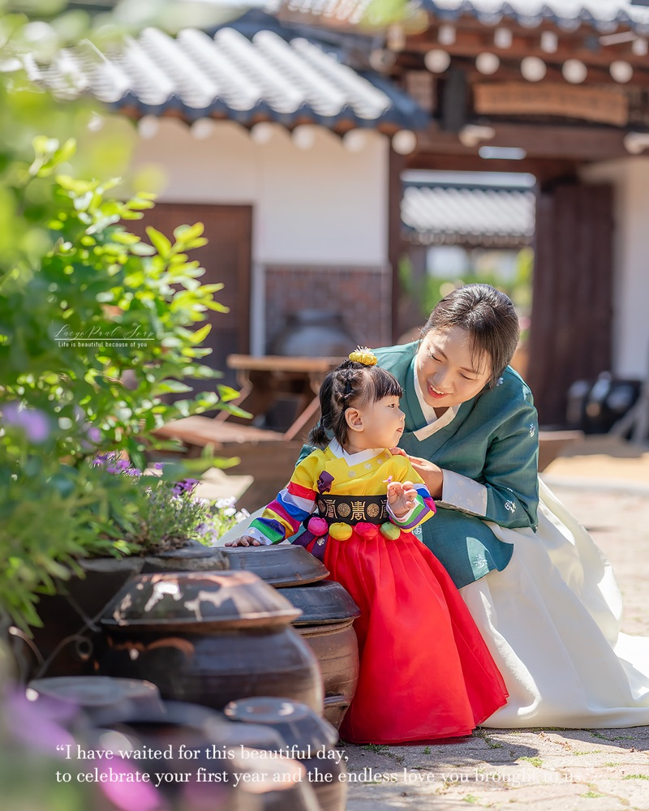

About
Lucy & Paul

Photographer
기다리는 사진을
찍습니다
루시앤폴스냅은 2018년부터 돌잔치와 돌스냅을 촬영해 왔습니다. 호텔과 레스토랑, 한옥과 정원까지 장소는 매번 달라도 가장 중요한 것은 늘 같았습니다. 아이가 편안해야 좋은 사진이 나온다는 것입니다.
낯선 카메라 앞에서 아이가 마음을 열 때까지 서두르지 않습니다. 가족의 동선을 방해하지 않는 거리에서 지켜보다가, 아이가 웃고 부모가 그 웃음을 바라보는 순간을 놓치지 않으려 합니다.
시간이 지나 다시 꺼내 보았을 때 사진보다 그날의 기억이 먼저 떠오르기를 바랍니다.
Lucy & Paul